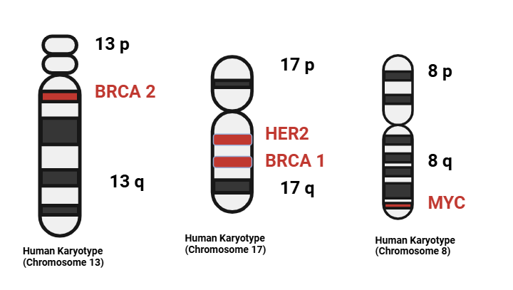

Cytogenetics plays a crucial role in understanding the genetic alterations associated with breast cancer. This field involves the study of chromosomes and their changes, which can provide insights into tumor development and progression.
Chromosomal Abnormalities in Breast Cancer
Breast cancer is characterized by a wide array of chromosomal abnormalities. Research has shown that these abnormalities can be categorized into several types:
Aneuploidy: Many breast cancer cell lines exhibit aneuploid karyotypes, indicating an abnormal number of chromosomes. Studies have found that these karyotypes can vary significantly, ranging from diploid to highly aneuploid forms
Translocations: Specific chromosomal translocations are frequently observed, with the most common involving chromosomes 8 and 11. Other notable translocations include 8;17, 1;4, and 1;10. Over 98% of these translocations are unbalanced, which can contribute to tumorigenesis
Deletions and Duplications: Deletions on chromosomes 1, 6, and 7, as well as duplications on chromosomes such as 18 and 12, have been documented. For instance, the der(1;16) translocation is associated with gains on chromosome 1q and is frequently observed in breast carcinomasSource

Figure Description
Numerous genes have been linked to the initiation and progression of breast cancer.HER2 and BRCA1genes are located on a chromosome 17, BRCA2 gene is located on a chromosome 13, MYC gene is located on a chromosome 8
Figure FISH analysis of breast cancer nuclei. A) Analysis with a specific LRIG1 (red) probe showing increased gene copy number (more than two copies) of the LRIG1 gene at 3p14. B) Analysis with a specific CEP3 (centromeric probe for chromosome 3, red). Showing no additional chromosome 3. C) Analysis with a specific 3p subtelomeric probe (green) and LRIG1 (red) mixture showing increased gene copy number of the LRIG1 gene but only two copies of the 3p arm. D) Analysis with a mixture of probes for CEP3 (red), X chromosome (green) and chromosome 18 (blue), showing no aneuploidy for these chromosomes. Increased copy number at 3p14 in breast cancer. Ljuslinder et al., Breast Cancer Res. 2005;7 (5):R719-27. Reprinted with permission from BioMed central.Source